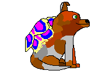
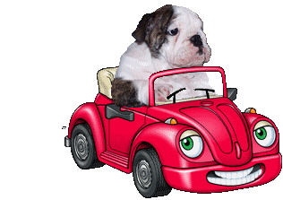
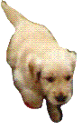
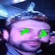

AVRI LA VOKITA:(
MATERIALES NECESARIOS:
UNA COMPUTADORA CON INTERNET
CAMARA WEB Y PARLANTES PARA REPRODUCIR SONIDO A BUEN VOLUMEN
AMBIENTE ILUMINADO
1CELULAR QUE FILME
INSTRUCCIONES
hace click en "click para arrancar" mas abajo en la pantalla y acomoda la cara para que te la detecte bien la camara
-
tenes que abrir la voca y superar el 0.6 del "medidor"
una vez superado ese nivel, va a aparecer un boton q te aviva paraque grabes y un contador que arranca en 18 minutos 40 segundos
-
si cerras un poco la boca y baja el medidor, se reinicia el contador y tienen que empezar de vuelta
- Antes de empezar dale click este disquito acá pa amenizar
- tenes que grabarte o que alguien mas te grabe durante los 18 minutos y pico que dura el contador, enfocandote la boka, pero principalmente que se vea al contador arrancar y terminar en 0, hay un premio muy groso por esto, una locura
- cuando tengas el video filmado manda un mail a 666@bebeto.pizza y aguarda por instrucciones
- hay un premio importante, q me va a salir guita, posta, 100x100real
- ESTO PUEDE NO FUNCIONAR EN TU COMPU, ASI QUE NO TE SIENTAS SOLX;(
